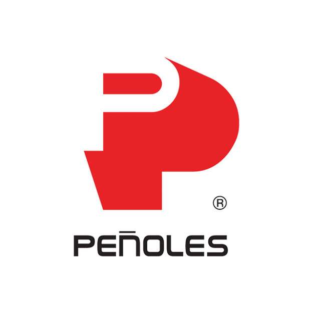

A Grupo Peñoles
Propuesta confidencial
Ingresa el código de acceso
que te compartió el equipo de Made.
Código incorrecto. Verifica e intenta de nuevo.
Ingresa el código de acceso
que te compartió el equipo de Made.

A Grupo PeñolesMade es una empresa Mexicana de inteligencia artificial industrial respaldada por NVIDIA Inception, Founders Inc y Startup Chile, con el reconocimiento del MIT Technology Review Innovators Under 35 LATAM 2025.
La telemetría de la flota subterránea de Peñoles se almacena en servidores on-premise y se expone vía API para tableros nativos, analítica avanzada e integración con sistemas corporativos. El dato ya está. Pero el dato sin prescripción no detiene el paro: solo lo documenta. Made OS es la capa que convierte esa señal en una orden clara de intervención, ruteada al supervisor correcto, en el canal correcto, dentro de la ventana donde aún se puede actuar.
En 2025 la industria minera mexicana enfrentó costos de mantenimiento al alza y retroceso generalizado en producción metálica. En este contexto, el equipo móvil subterráneo concentra el riesgo operativo: cada hora fuera de rotación se traduce directamente en toneladas no movidas y margen perdido. En las cinco unidades mineras directas de Peñoles (Velardeña, Sabinas, Tizapa, Capela, Bismark) más Milpillas (SX-EW), las fallas súbitas en frenos, dirección o sistema hidráulico añaden además una dimensión de seguridad operativa relevante para los compromisos ICMM de Peñoles.
Made OS no compite con la telemetría existente ni reemplaza los tableros nativos. Se acopla a la API on-premise que Peñoles ya opera, agrega capa de prescripción, prioriza por impacto en la operación específica de la unidad, y dispara la alerta accionable al canal donde el supervisor de mina ya trabaja (WhatsApp, SMS, WebApp). Esa es la brecha que hoy queda abierta entre el tablero nativo y la decisión en turno.
Recap del discovery: hechos verificados en Q&A inicial e implicación operativa para el programa.
| Hecho verificado | Implicación operativa |
|---|---|
| Infraestructura 100% on-premise · datos crudos en sus servidores | Made no propone nube OEM. Despliegue alineado: Software+API o Edge envían telemetría a cloud de Made por canal saliente cifrado. |
| API ya expuesta y operacional ("para integrar y explotar la información de acuerdo con las necesidades operativas y de negocio") | Cero CAPEX de telemetría. Made se conecta a algo que ya existe en producción. Reduce time-to-value drásticamente. |
| Reportes nativos y analítica básica ya presentes | Made no compite con tableros existentes; se acopla por encima con capa prescriptiva. Anti-sustitución. |
| Casos de uso ya identificados internamente (variables operativas, disponibilidad de equipos, desempeño de procesos, alertamiento oportuno) | El vocabulario del cliente ya es el de un sistema de monitoreo y alertamiento. Made habla el mismo lenguaje en la primera sesión. |
| Trabajo conjunto con proveedores OEM | Relación contractual establecida con fabricantes. Made se inserta como capa adicional encima del OEM, no como reemplazo. |
| Conectividad operativa ya cubre la malla: WiFi mesh segmentado en interior, Leaky Feeder de voz, LTE privada en superficie | Made no requiere infraestructura de red adicional. Blackouts serían de zona específica, no sistémicos. |
| Sin minas open-pit en Peñoles ("En Peñoles no contamos con minas Open-pit") | Toda la flota referenciada en este programa es subterránea: LHD, jumbo de barrenación, camión articulado subterráneo. Sin equipo de superficie. |
| Foco declarado: equipo móvil para mantenimiento preventivo (cargadores frontales, equipo de barrenación, equipo de acarreo) | Fase 1 se ancla en flota móvil subterránea, no en relaves ni planta. Coincide con la dirección operativa del cliente. |
| Telemetría ya alimentando esfuerzos predictivos ("Ahí están todos nuestros esfuerzos de mantenimiento predictivo") | Cliente ya invierte en predictivo. La brecha que cierra Made es prescripción accionable y ruteo a supervisor en turno, no detección de anomalía aislada. |
| Relaves identificados como problema estratégico | Fase 2, nivel estratégico-operativo. |
| Reducción de volumen de relave como métrica clave ("si ayudas a reducir volumen de relave es mejor") | Fase 2 debe enmarcarse vía disponibilidad del circuito de relaves (espesador, ciclonera, paste backfill) que afecta tonelaje a TSF, no como monitoreo aislado de bombas. |
Fuentes del recap: Q&A consultas con Peñoles (MAYO 2026) · Reporte BMV 4T2025 utilizado únicamente para contexto financiero referenciado en otras secciones.
Datos adicionales necesarios que el Q&A inicial no cubrió.
| Pregunta abierta | Por qué importa |
|---|---|
| Lista oficial de unidades operativas y tamaño de flota por unidad | Hoy enumero unidades desde fuentes públicas (BMV); tamaño de flota es desconocido. Determina alcance, elección de unidad inicial y volumen de eventos esperado. |
| Marcas y modelos OEM reales del parque (Cat / Komatsu / Sandvik / Epiroc) | Sin esto no se puede cotizar success fee por evento con precisión ni elegir el feed OEM correcto (VIMS, KOMTRAX, Sandvik 365, Certiq). |
| MTBF histórico por clase de activo (12-24 meses) | Calibra el ROI proyectado con su dato real y no con benchmarks externos. Mantenimiento o Confiabilidad lo tiene. |
| Sistema CMMS específico (SAP PM, Maximo, Infor EAM, otro) | Determina cómo Made inyecta el work order draft. Sin esto la prescripción queda fuera del flujo de mantenimiento. |
| Política IT/OT del canal saliente cifrado | Determina ruta de aprobación de seguridad y tiempo de habilitación del canal a la capa cloud de Made. |
| Frecuencia y costo histórico de pull-outs no planificados en la unidad candidata | Calibra el escenario base de ROI con dato real, en lugar de los rangos GMG / Cat / Sandvik / Epiroc que usamos hoy como referencia. |
| Champion técnico interno con autoridad (Confiabilidad o Mantenimiento Mina) | Requisito operativo del programa: sin sponsor designado con autoridad para validar KPIs, el programa no puede ejecutarse. |
| Presupuesto disponible y ciclo de procurement | Determina velocidad de cierre y si el ticket inicial encaja en presupuesto discrecional o requiere review ejecutivo. |
| Volumen de telemetría (señales por segundo, política de retención) | Determina si Software+API alcanza o conviene Edge en activos de alta frecuencia. Calibra capacidad de buffer offline necesaria. |
Programa en dos fases. Fase 1 (mes 1 al 9): flota subterránea crítica. Ejemplo. LHDs, jumbos de barrenación y camiones de acarreo subterráneo: la prioridad, donde ya existe necesidad en mantenimiento preventivo y telemetría operativa. Fase 2 (mes 9 en adelante): circuito operativo de relaves. Ejemplos propuestos. Bombas de pulpa, espesadores, cicloneras y líneas de transporte: el frente subatendido bajo presión GISTM/ICMM, conectado a cada operación. Mismo motor predictivo, dos ventanas de valor secuenciales. ROI desde el primer evento crítico evitado.
Made OS no instala telemetría desde cero ni reemplaza el sistema OEM ni los tableros nativos de Peñoles. Se conecta a la API on-premise que Peñoles ya tiene operando para integrar, agrega clasificación de riesgo, prioriza por impacto, y emite la prescripción al canal del supervisor de mina. Modo solo-lectura. Cero modificación a SCADA, PLC o lógica de control.
Made no instala telemetría desde cero. Trabaja sobre lo que la flota ya emite. Estos tres requisitos determinan si la clase de activo candidata califica y qué tipo de integración aplica.
Made OS se adapta a cómo cada unidad de Peñoles ya recibe los datos de su flota. En la sesión técnica inicial definimos cuál ruta aplica a la clase de activo candidata.

Made Edge instalado en tablero DIN rail con conectividad industrial

Made OS · Plataforma web con análisis de sensores y agente conversacional
| Concepto | Monto | Notas |
|---|---|---|
| Made OS: Precio base | $2,000 USD | Fijo mensual por clase de activo · hasta 3 clases |
| Success fee: Evento Clase A | $5,000 USD / evento | Cap: $50,000 al mes · definición auditada conjunta |
| Conector API a feeds OEM | Sin costo | VIMS · KOMTRAX · Sandvik 365 · Certiq · Wenco · incluidos en el alcance de este programa[1] |
| Edge retrofit grado minero IP67 · NEMA 4X · NOM-032-STPS · IECEx M1/M2 según unidad |
$8,000 USD | Pago único, solo si la clase de activo lo requiere · incluye hardware e instalación |
| Inversión total estimada (9–12 meses · 3 clases de activo) | ~$116K–$138K USD | Base + retrofit (si aplica) + success fees estimados |
| ROI estimado del programa | ~900% (esperado) | Banda razonable 360%–2,400% según escenario · ver tabla de escenarios abajo |
[1] Alcance de la integración API sin costo: la conexión a la API on-premise de Peñoles y a los feeds OEM listados (Cat MineStar/VIMS, Komatsu KOMTRAX, Sandvik 365, Epiroc Certiq, Wenco, Modular Mining) se entrega sin costo de implementación exclusivamente dentro del alcance contractual de este programa: hasta tres (3) clases de activo móvil subterráneo en una (1) unidad operativa designada, durante el horizonte de 9 a 12 meses de Fase 1. Integraciones adicionales a nuevas clases de activo, nuevas unidades operativas, o feeds no contemplados en el alcance original, se cotizan por adendum bajo el modelo de pricing vigente en el momento de la solicitud. La presente condición no constituye precedente ni obligación tarifaria para programas o renovaciones posteriores.
| Escenario | Eventos Clase A evitados | Costo promedio evento | Ahorro bruto | Inversión total | ROI |
|---|---|---|---|---|---|
| Conservador 2 pull-outs / 12 meses |
2 | $250,000 | $500,000 | $138,000 | ~360% |
| Esperado 4 pull-outs / 12 meses · escenario base |
4 | $300,000 | $1,200,000 | $130,000 | ~900% |
| Optimista 7 pull-outs / 12 meses · flota crítica completa |
7 | $470,000 | $3,290,000 | $116,000 | ~2,400% |
Costo promedio por escenario calibrado con la tabla de Datos para la proyección (arriba). Inversión total varía según uso de Edge retrofit y success fees efectivos. El escenario Esperado es la referencia para el cómputo del éxito del programa; los escenarios Conservador y Optimista delimitan la banda razonable según volumen de eventos detectados y costo de cada uno en la unidad operativa de Peñoles seleccionada.
Costo estimado de un evento crítico evitado, por clase de activo móvil
| Clase de activo | Unidades referencia | Costo evento mayor (rebuild + downtime) | Ventana típica de detección |
|---|---|---|---|
| Acarreo subterráneo | Camiones articulados subterráneos (Cat AD-series, Sandvik TH-series) | $250,000 – $700,000 | Transmisión / diferencial: 2-6 semanas |
| Carga (LHDs) | Cargadores subterráneos (Epiroc Scooptram operando en Velardeña; Cat R-series, Sandvik LH-series) | $200,000 – $500,000 | Hidráulico / motor diésel: 1-4 semanas |
| Barrenación | Jumbos subterráneos (Sandvik DD/DL, Epiroc Boomer/Simba; jumbos documentados en Sabinas) | $150,000 – $350,000 | Tren de impacto / hidráulico: 1-3 semanas |
| Ventilación y dewatering | Ventiladores y bombas centrífugas industriales (varios proveedores) | $80,000 – $220,000 | Sello / impulsor / motor: 5-15 días |
Baseline y disputas. Baseline calibrado durante los primeros 30 días del programa. Ventana de disputa de cualquier evento: 10 días hábiles desde la emisión del reporte mensual. Disputas dirimidas por árbitro técnico independiente bajo el mecanismo siguiente.
Mecanismo de árbitro técnico. Al inicio del programa, Made y Peñoles seleccionan mutuamente un árbitro de una shortlist conjunta de tres referentes con perfil: ingeniero senior de confiabilidad con certificación CMRP/CRL o equivalente, 15+ años de experiencia en minería subterránea, sin relación contractual vigente con Made ni con Peñoles. Las disputas se revisan en sesión bimestral (no caso a caso), con decisión vinculante únicamente sobre la procedencia de success fees del período. Honorarios del árbitro: 50% Made / 50% Peñoles. Si las partes no acuerdan el árbitro inicial dentro de 30 días, GMG (Global Mining Guidelines Group) actúa como autoridad designante.
La transición a Fase 2, puede comenzar una vez terminado el tiempo propuesto de la fase 1, o simultáneo. Made OS conserva el motor predictivo y la metodología; cambia la clase de activo. Se aplica al equipo operativo del circuito de relaves de cada unidad de Peñoles: bombas de pulpa centrífugas, espesadores, cicloneras, líneas de transporte de cola.
Mensaje recibido del equipo de Peñoles: "los relaves son un problema; si ayudas a reducir volumen de relave es mejor."
Made OS opera como capa pasiva de observación y prescripción; no controla setpoints metalúrgicos ni opera lógica de proceso. La palanca sobre volumen es indirecta, vía disponibilidad y ventana operativa del equipo del circuito: si el espesador opera degradado, su underflow density cae y más agua va a presa; si las cicloneras pierden eficiencia de clasificación, más material útil termina en cola; si la bomba de paste backfill no está disponible, el relleno no regresa a interior mina. Cada hora que estos activos operan fuera de ventana óptima son toneladas adicionales en la TSF. Made OS detecta la degradación temprano y dispara la prescripción antes de que cruce ese umbral.
Post-Brumadinho (2019) y Jagersfontein (2022), la GISTM (Global Industry Standard on Tailings Management) es estándar regulatorio de hecho. ICMM lo audita. Peñoles es signataria ICMM. Eso convierte el monitoreo del circuito operativo de relaves en gasto obligatorio: presupuesto que ya no es discrecional. Bombas de pulpa Warman/GIW/Metso fallan con frecuencia, abrasión alta, ventana de detección corta, mal instrumentadas. Es el frente donde Made OS más palanca tiene.
Equipo cubierto: bombas centrífugas de pulpa (Warman, GIW, Metso slurry), espesadores (Outotec, FLSmidth), cicloneras (Krebs, Cavex), líneas de transporte de cola, bombas de paste backfill. Plant SCADA vía OPC UA da el contexto de proceso (flujo, presión, densidad, nivel, temperatura). Edge retrofit es más necesario que en Fase 1 (mix aproximado 40% API / 60% Edge) porque las variables de condición (vibración impulsor, firma acústica de sello, temperatura de cojinete a frecuencia útil) rara vez están en la capa SCADA.
| Concepto | Monto | Notas |
|---|---|---|
| Made OS: Precio base Fase 2 | $1,500 USD | Fijo mensual por clase de activo · tarifa de continuación (modelo entrenado existe) |
| Success fee: Evento Clase A en relaves | $4,000 USD / evento | Cap: $40,000 al mes · definición auditada conjunta |
| Edge retrofit para bombas y espesadores Sensor de vibración, firma acústica, temperatura de cojinete |
$6,000 USD | Pago único por activo retrofit · incluye instalación |
| ROI estimado Fase 2 (12 meses · 2 clases relaves) | 600% – 1,800% | Eventos evitados en bombas de pulpa + espesadores. Ventanas de detección cortas requieren acción rápida; aquí Made es desproporcionadamente útil. |
La Fase 2 se activa en el mes 9 con una sesión de transición de 60 minutos. Si Fase 1 no demostró ROI auditado, Peñoles no está obligada a continuar a Fase 2. La estructura de pricing reduce 25% el fee base de Fase 1 reconociendo que el motor predictivo y la integración están en operación.
Made OS opera hoy sobre activos industriales en programas activos cross-vertical. Peñoles representaría el caso inaugural del producto en minería Tier 1, lo cual define los términos comerciales preferenciales y de colaboración descritos abajo.
Referencias completas y datos auditados disponibles bajo NDA en la sesión técnica. La selección de referencias mostradas aquí prioriza la analogía técnica con el caso Peñoles (activos rotativos críticos, telemetría continua, decisión operativa por turno), no la analogía sectorial directa.
El posicionamiento de Peñoles como cliente inaugural de Made OS en minería Tier 1 conlleva un conjunto de compromisos preferenciales que reflejan la importancia estratégica de la relación:
Modelo de colaboración con riesgo compartido. Made asume el riesgo operativo. Peñoles captura el valor.
| Dimensión | OEM analytics (MineStar / KOMTRAX / Sandvik 365) | Made OS |
|---|---|---|
| Alcance | Solo flota del mismo OEM, en silos | Multi-OEM unificado: VIMS + KOMTRAX + Sandvik 365 + Certiq |
| Salida | Telemetría y diagnóstico | Prescripción accionable: qué activo, qué hacer, en qué ventana |
| Canal de entrega | Dashboard del OEM, requiere pull | WhatsApp / SMS al supervisor de mina en turno |
| Modelo comercial | Anclado al contrato OEM, sin success fee | Base mensual + success fee por evento evitado auditado |
| Aprendizaje | Genérico por modelo de equipo | Por número de serie y por mina (altitud, ciclo, frente) |
| Riesgo | 100% del cliente | Compartido, extensión sin costo si no hay ROI |
| Reemplaza al OEM | No aplica | No. Made OS se acopla encima. |
Una sesión técnica con el equipo fundador de Made para evaluar qué clase de activo subterráneo de Peñoles califica para Fase 1 (acarreo, carga o barrenación), validar la integración con la API on-premise existente, y dejar pre-acordada la transición a Fase 2 (equipo de relaves).
Antes de cerrar pricing y scope finales necesitamos confirmar 4 puntos con su equipo. Cada uno calibra una dimensión específica del programa:
Sesión técnica de 30 minutos · Remota · Asistentes: Gerardo Peña (CEO) + Ramiro Pantoja (CTO). Objetivo: calificación técnica + plan de programa en 1 página. Una vez aprobado, el programa inicia en menos de 10 días hábiles.
Esta sección contiene los detalles técnicos y de gobernanza que ingenieros de confiabilidad, OT/IT, procurement y auditores requieren para validación formal. Plegada por defecto para no romper el flujo de lectura ejecutiva; se imprime expandida en formato PDF.
Edge (dispositivo dedicado on-site). Conexión a PLCs y máquinas vía OPC-UA y feeds OEM. Recolección de telemetría. Tareas de visión con AI sobre frente operativo cuando aplica. Modelos especializados por activo on-device para detección de anomalía. Buffer local de 256 GB estándar (ampliable a 1 TB o 2 TB on-demand al inicio del programa). El Edge no ejecuta agente AI, no ejecuta LLM, no genera prescripciones autónomamente.
Software + API (alternativa sin hardware). Conector que corre on-prem sobre la infraestructura de servidores de Peñoles. Lee de la API on-premise de telemetría y de feeds OEM directos. Envía telemetría a la capa cloud de Made vía TLS 1.3. Mismo límite funcional que el Edge: no ejecuta el agente prescriptivo localmente.
Cloud (capa de orquestación de Made). Procesa y almacena la información capturada por Edge o Software+API. Corre el agente AI con LLM. Analiza datos recientes contra histórico. Genera notificaciones, prescripciones y reportes. Ruteo a canales del supervisor en turno (WhatsApp, SMS, WebApp, Mail).
Operación cloud requerida para prescripciones. El valor prescriptivo de Made OS requiere conectividad cloud activa. Durante intermitencia, el Edge mantiene buffer local; al reconectar sincroniza el buffer completo y las prescripciones se reanudan. Detalle de comportamiento offline en A5.
Zonificación IEC 62443. Made OS opera en una zona OT designada (Edge) o en una zona DMZ industrial (Software+API). En ambos modos, la única salida es el canal cifrado TLS 1.3 hacia la capa de orquestación de Made en cloud. No hay conexiones entrantes desde Internet hacia la zona OT de Peñoles.
Lista de endpoints + puertos. Made aporta documentación explícita de IPs/dominios y puertos requeridos para el canal saliente, validable por IT/OT antes de habilitar. Sólo egress de la red OT.
Lo que sale por TLS. Métricas agregadas, vectores de inferencia y eventos clasificados. El dato crudo de telemetría permanece on-premise. Volumen típico del canal saliente: 2 a 20 MB/día por activo, según frecuencia de muestreo.
Mecanismo de revocación. Un comando de IT/OT corta el canal saliente en cualquier momento. Made OS detecta la pérdida de canal y deja de operar; la telemetría de Peñoles continúa intacta porque Made nunca tocó la ruta de control.
Dato crudo. Propiedad exclusiva de Peñoles. Permanece en servidores de Peñoles en todo momento. Made no replica el dato crudo fuera del perímetro de Peñoles.
Modelo entrenado. El modelo prescriptivo entrenado durante el programa queda alojado en infraestructura de Peñoles. Made conserva derecho de uso para mejorar el modelo de producto general, sujeto a anonimización y aprobación explícita; Peñoles conserva derecho de uso ilimitado del modelo entrenado sobre su operación.
Baseline operativo. Propiedad del cliente que lo generó. Made no usa baselines de Peñoles para servir a competidores.
Exit clause. Cualquiera de las partes puede terminar el programa con 60 días de aviso por escrito. Made entrega el modelo entrenado y el historial de datos en formato estándar (JSON / Parquet) al cierre, sin costo adicional. Liability cap: monto agregado pagado en los 12 meses previos. Indemnización mutua estándar; sin daños indirectos.
Cumplimiento IEC 62443 SL-2 baseline. Made OS implementa el framework de zones & conduits según IEC 62443 con baseline ISA/IEC 62443-3-3 SL-2. Documentación de arquitectura disponible para revisión bajo NDA.
Pen-test. Política de pen-test anual sobre el surface de Made (cloud orchestration layer + canal saliente). Reportes ejecutivos disponibles bajo NDA. Pen-test adicional bajo solicitud de Peñoles a costo compartido.
Comportamiento durante pérdida de conectividad cloud. El Edge almacena la señal en buffer local. Capacidad estándar: 256 GB. Ampliable a 1 TB o 2 TB on-demand al inicio del programa, según volumen de telemetría esperado y duración de blackouts típicos de la unidad.
Sincronización al reconectar. Al recuperar conectividad cloud, el Edge sincroniza el buffer completo de forma asíncrona. La capa cloud procesa la señal acumulada contra el histórico y reactiva la cadencia de prescripciones.
Lo que no ocurre durante el blackout. No hay generación de prescripciones nuevas. Los modelos especializados por activo on-device pueden seguir levantando alertas locales de anomalía si están configurados, pero la prescripción accionable (qué activo, qué subsistema, qué ventana, qué supervisor) requiere la capa cloud para emitirse.
Datos financieros y operativos · Peñoles
Reporte BMV 4T2025 (USD), publicado 31-oct-2025
Benchmarks de costo de evento y MTBF de equipo móvil
Contexto regulatorio (relaves · Fase 2)
Costo del paro no planificado en industria
Marco técnico de la integración
Documentación pública de Made OS